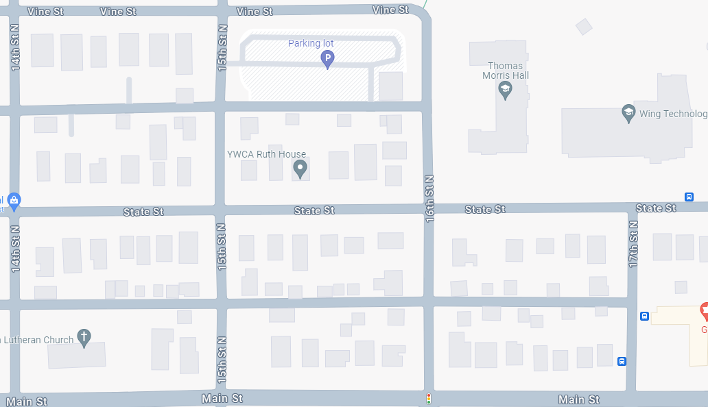
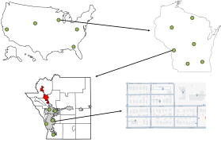
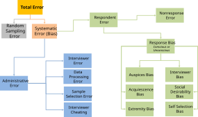
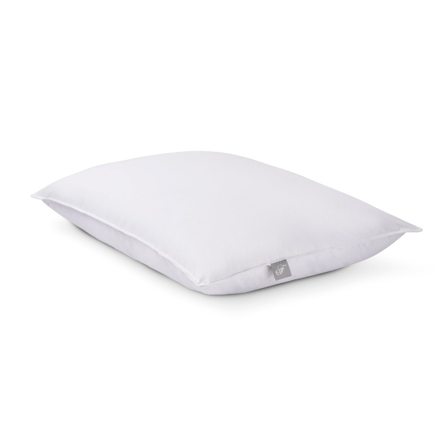

Week 12 - Sampling and Survey Research
Can a sample tell the truth?
Today’s question
When does a small group of people tell us something useful about a much larger group?
First: take the survey
Class data lab
We are going to use your responses as today’s dataset.
- Take the survey.
- Do not overthink your answers.
- We will use the response pool to test sampling methods.
Today
- What a sample is trying to represent
- Random vs representative
- Sampling methods
- Sampling frame and nonresponse error
- Survey question design
Population to Sample
Total Population


Sampling Frame
Planned Sample
Sample
The Survey Pipeline
| Stage | Question |
|---|---|
| Target population | Who do we want to understand? |
| Sampling frame | Who could be selected? |
| Planned sample | Who did we try to select? |
| Respondents | Who actually answered? |
| Final estimate | What did we conclude? |
Random vs Representative
The goal
Good sample
A good sample is random enough to protect against selection bias and representative enough to reflect the population we care about.
Randomness is not the same as representativeness
| Representative | Not representative | |
|---|---|---|
| Random | Best case | Possible, especially with small samples or bad frames |
| Not random | Possible, but harder to defend | Common convenience-sample problem |
Random
Random sample
Every unit in the frame has a known chance of being selected.
Random sampling helps protect us from hidden selection rules.
It does not guarantee perfection in every single sample.
Representative
Representative sample
The sample resembles the population on variables that matter for the question.
Representative is about the result.
Random is about the process.
Random but not representative
This can happen when:
- the sample is small
- the frame is flawed
- an important subgroup is rare
- the random draw is unlucky
- nonresponse changes the final data
Nonrandom but representative
This can happen, but it usually requires careful control.
Examples:
- quota sampling
- judgment sampling
- balanced recruitment
- post-stratification or weighting
Tradeoff
Nonrandom samples can be useful, but they are harder to defend.
Sampling Methods
Same goal, different risks
Every sampling method is trying to answer:
How do we learn about the population without measuring everyone?
But each method creates different risks.
Probability Sampling
Non Probability Sampling
Simple Random Sample
Coin flip each row in the app.
<span class="small">Fast way to make randomness visible without pretending every draw is perfectly representative.</span>Systematic Sample
Systematic Sample Walkthrough

Convenience Sample
Stratified Sample
Quota Sample
Cluster | Judgement | Snowball Sample
Multistage Area Sample

Sampling Lab
App Activity
In the app, choose:
- an outcome variable
- a sample size
- a sampling method
- a comparison group
Then ask:
Did the sample look like the response pool?
What to watch
- Sample estimate
- Full response-pool estimate
- Difference between the two
- Class standing mix
- Attendance mix
- Work hours
- Commute time
- Early vs late responders
The important comparison
Not just the estimate
Two samples can have similar averages but very different subgroup composition.
Representation is about who is in the data, not just whether one number looks close.
Random Sampling Error
Random sampling error
Random sampling error is the difference caused by selecting one random sample instead of another.
It is noise from sampling.
It is not the same as bias.
Bias Sources

Survey Design
The transition
Measurement problem
Even if we sample the right people, we can still ask the wrong question.
Select One
Use select-one questions when respondents should choose one best answer.
Example:
What is your primary way of getting to campus?
Design check
Are the choices mutually exclusive enough for the question?
Select All That Apply
Use all-that-apply when multiple answers can be true.
Example:
Which tools have you used for coursework this semester?
Interpretation warning
The percentages across choices usually do not add to 100%.
Likert Scale
Likert scales make attitudes easier to measure consistently.
Example:
I feel confident interpreting statistical results.
Strongly disagree -> Strongly agree
Semantic Differential
Semantic differential scales measure perception between opposite ideas.
Example:
Statistics feels…
Easy 1 2 3 4 5 6 7 Difficult
Numeric Scales Need Anchors
Bad:
Rate your confidence from 0 to 100.
Better:
0 = not confident at all
50 = somewhat confident
100 = completely confident
Constant Sum
Constant sum
Respondents allocate a fixed number of points across options.
Use it when you want prioritization.
Electronic surveys can enforce the total.
Graphic Rating Scales
Graphic scales can help when numbers or words are difficult.
Useful in:
- child surveys
- low literacy contexts
- medical pain scales
- fatigue or communication difficulty
Drilldown Questions
Drilldown
Start broad, then narrow the choices.
Better than forcing people through a giant pick list.
Example:
College -> Department -> Major
Collectively Exhaustive vs Mutually Exclusive
Question categories can fail in different ways
Collectively Exhaustive
How old are you?
- 18-20
- 20-22
- 22-24
How old are you?
- < 18
- 18-20
- 20-22
- 22-24
- 24+
Mutually Exclusive
How old are you?
- 18-20
- 21-22
- 23-24
How old are you?
- < 18
- 18-20
- 21-22
- 23-24
- 25+
Generate Variance
Generate Variance
How many meals per day do you eat?
- 0-5
- 6-10
- 11+
How many meals per day do you eat?
- Less than 1
- 1
- 2
- 3
- More than 3
Sensitivity
Sensitivity
I am bored.
- Strongly Disagree
- Disagree
- Neutral
- Agree
- Strongly Agree
I am bored.
- Disagree
- Agree
I am bored.
- Strongly Disagree
- Disagree
- Somewhat Disagree
- Agree
I am bored.
- Extremely Very Strongly Disagree
- Very Strongly Disagree
- Strongly Disagree
- Disagree
- Extremely Very Moderately Disagree
- Very Moderately Disagree
- Moderately Disagree
- Extremely Very Somewhat Disagree
- Very Somewhat Disagree
- Somewhat Disagree
- Disagree Somewhat
- Kind of Disagree to some extent
- Not Really Disagree
- Neutral
- Moderately Neutral
- Extremely Neutral
- Neutrally Neutral

Heat Maps
Electronic surveys can collect information paper surveys cannot.
Example:
Click the part of this chart that is most confusing.
Useful for testing:
- visuals
- dashboards
- app screens
- instructions
Text Boxes
Open text
Text boxes reveal categories the researcher did not anticipate.
Example:
What is something unique about you that a normal survey would not know to ask?
From Text Boxes to Sampling
If someone writes:
My obscure hobby is competitive speedcubing.
How would we sample that population?
Key link
Rare or niche populations often require judgment, cluster, or snowball sampling.
Bad Questions
Leading Question
Bad:
How much do you agree that this helpful course improves your analytical thinking?
Problem:
The wording pushes respondents toward a positive answer.
Loaded Question
Bad:
How often do you waste time using AI instead of thinking for yourself?
Problem:
The wording judges the respondent before they answer.
Double-Barreled Question
Bad:
The Shiny apps are easy to use and help me learn the material.
Problem:
This asks two questions at once.
Assumption Question
Bad:
How often do you use ChatGPT to complete your homework?
Problem:
It assumes the respondent uses ChatGPT.
Better Question Flow
- Have you used ChatGPT or another AI assistant for homework?
- If yes, how often?
- If yes, for which tasks?
- What did you check yourself?
Wrap Up
What makes a survey good?
Survey quality depends on:
- who could be selected
- who was selected
- who responded
- what they were asked
- whether the question measured what we think it measured
Prime Directive
Before trusting a survey result
Ask: who was in the frame, how were they sampled, who responded, and how was the question worded?
Exit Question
Pick one survey result you saw today.
Answer:
- What population did it claim to describe?
- What could make it biased?
- What would make the sample more representative?